| step | chain 1 | chain 2 | chain 3 | chain 4 | chain 5 |
|---|---|---|---|---|---|
| 1 | 0.1000000 | 0.3000000 | 0.5000000 | 0.7000000 | 0.9000000 |
| 2 | 0.0894830 | 0.3036224 | 0.4909961 | 0.6918153 | 0.8951483 |
| 3 | 0.0888948 | 0.3002659 | 0.4919129 | 0.6946801 | 0.9008528 |
| 4 | 0.0853845 | 0.3030381 | 0.4871295 | 0.6898734 | 0.8989818 |
| 5 | 0.0826313 | 0.2949438 | 0.4761009 | 0.6872206 | 0.8989818 |
| 6 | 0.0768894 | 0.2973711 | 0.4788800 | 0.6872206 | 0.8996724 |
| 7 | 0.0796352 | 0.2922830 | 0.4724440 | 0.6858423 | 0.8935327 |
| 8 | 0.0807874 | 0.2964747 | 0.4742603 | 0.6898477 | 0.8863538 |
| 9 | 0.0790930 | 0.2964846 | 0.4709396 | 0.6887288 | 0.8897852 |
| 10 | 0.0783251 | 0.2891121 | 0.4727961 | 0.6856081 | 0.8851058 |
22 Some Diagnostics for MCMC Simulation
- The goal we wish to achieve with MCMC is to simulate from a probability distribution of interest (e.g., the posterior distribution).
- The idea of MCMC is to algorithmically build a Markov chain whose long run distribution is the probability distribution of interest. Then we can simulate a sample from the probability distribution, and use the simulated values to summarize and investigate characteristics of the probability distribution, by running the Markov chain for a sufficiently large number of steps.
- But how do we know that the MCMC algorithm works? Some questions of interest:
- Does the algorithm produce samples that are representative of the target distribution of interest?
- Are estimates of characteristics of the distribution (e.g., posterior mean, posterior standard deviation, 98% credible region) based on the simulated Markov chain accurate and stable?
- Is the algorithm efficient, in terms of time or computing power required to run?
Example 22.1 Recall Example 21.3 in which we used a Metropolis algorithm to simulate from a Beta(5, 24) distribution. Given current state \(\theta_c\), the proposal was generated from a \(N(\theta_c,\delta)\) distribution, where \(\delta\) was a specified value (determining what constitutes the “neighborhood” in the continuous random walk analog). The algorithm also needs some initial value of \(\theta\) to start with; in Example 21.3 we used an initial value of 0.5. What is the impact of the initial value?
The following plots display the values of the first 100 steps, 1000 steps, and 10000 steps — and their densities — for 5 different runs of the Metropolis chain each starting from a different initial value: 0.1, 0.3, 0.5, 0.7, 0.9. The value of \(\delta\) is 0.005. (Note: we’re setting the \(\delta\) value to be very small to illustrate a point.) What do you notice in the plots? Does the initial value influence the results?
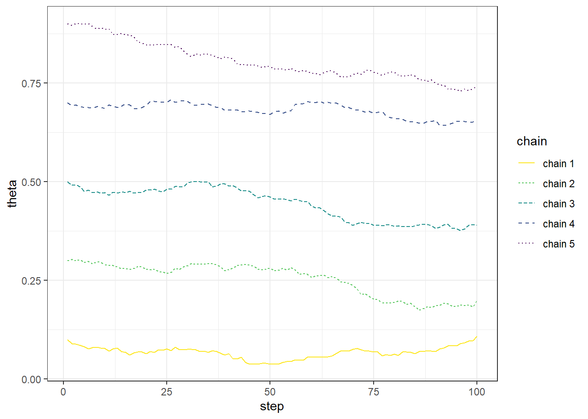
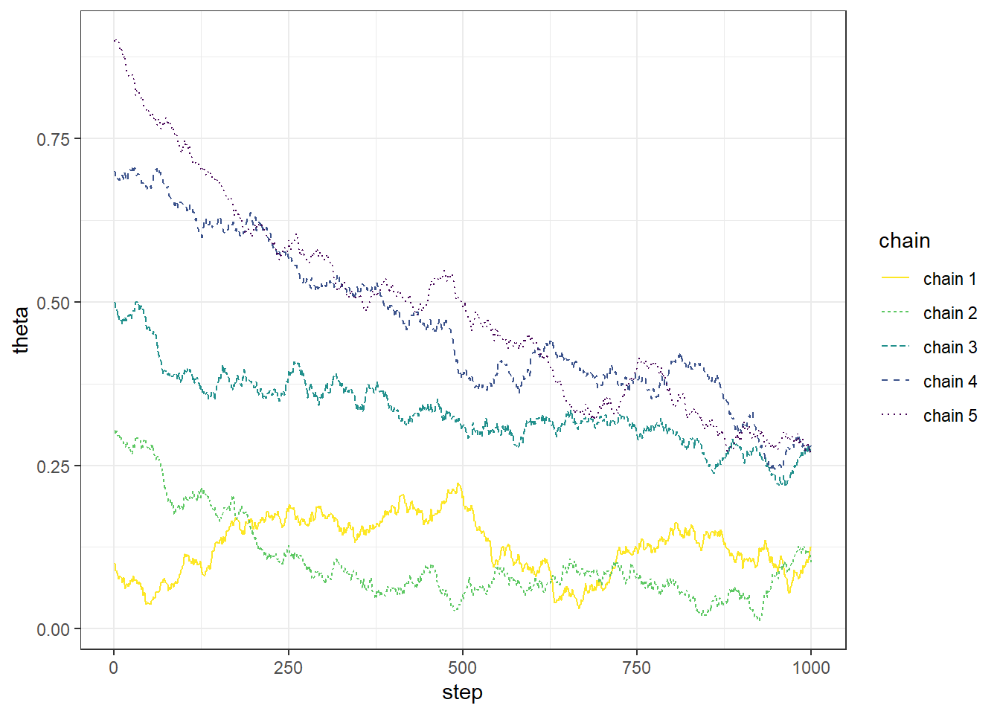
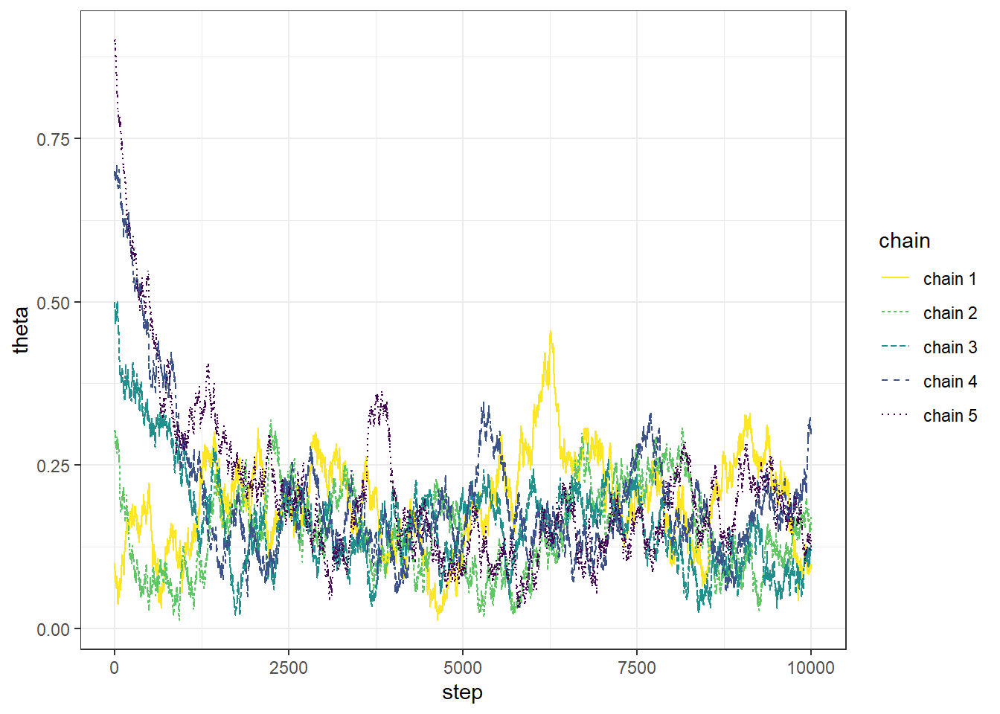
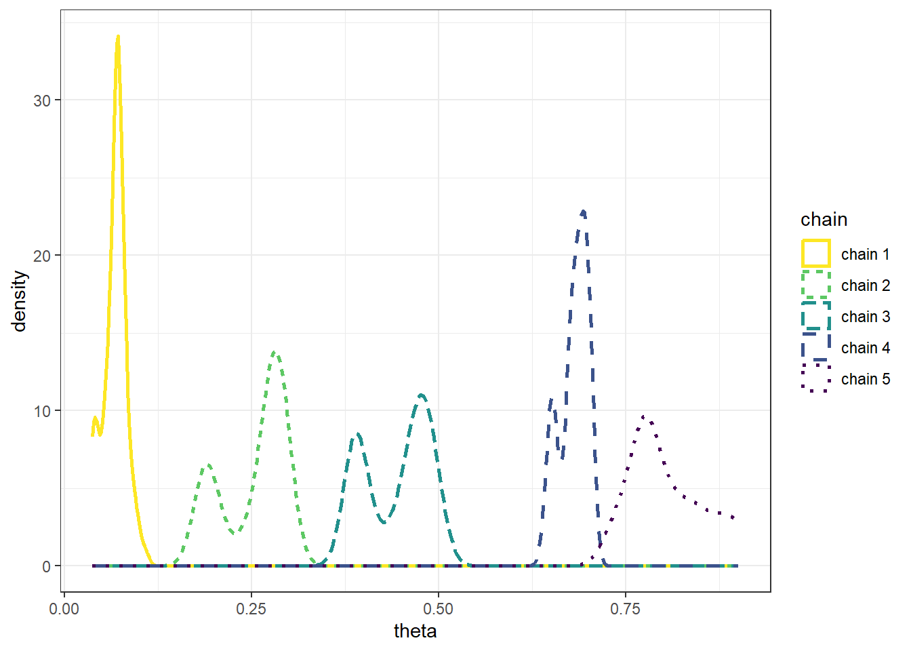
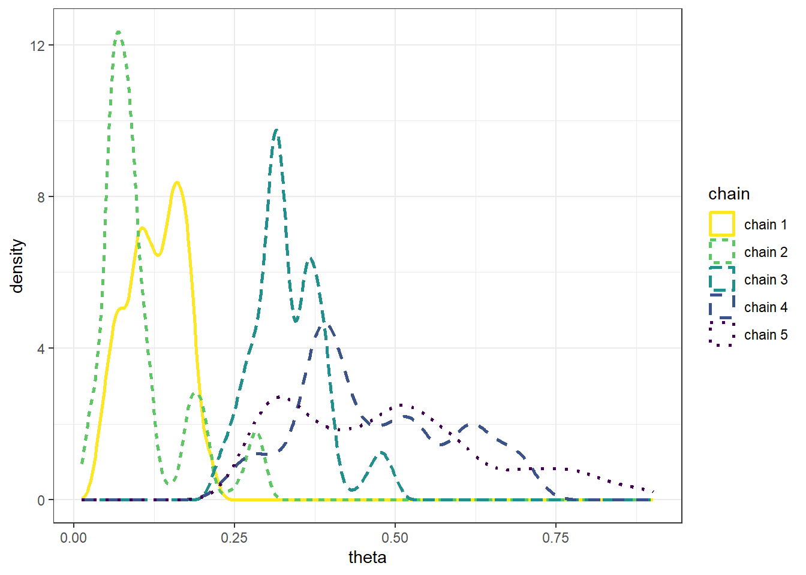
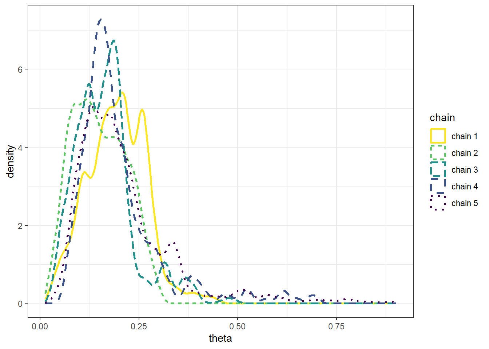
- The goal of an MCMC simulation is to simulate a representative sample of values from the target distribution.
- While an MCMC algorithm should converge eventually to the target distribution, it might take some time to get there.
- Warm up (or “warm up”) refers to the process of discarding the first several hundred or thousand steps of the chain to allow for a “settling in” period. Only values simulated after the warm up period are used to approximate the target distribution.
- In practice, it is common to use a warm up period of several hundred or thousands of steps.
- To get a better idea of how long the warm up period should be, run the chain starting from several disperse initial conditions to see how long it takes for the paths to “overlap”.
- After warm up period, examine trace plots or density plots for multiple chains; if the plots do not “overlap” then there is evidence that the chains have not converged, so they might not be producing representative samples from the target distribution, and therefore a longer warm up period is needed.
- In
brms:iteris the total number of steps for each single chainwarmupis the number of steps to discardchainsis the number of chains to run- For example
iter = 3500,warmup = 1000,chains = 4will produce 3500 - 1000 = 2500 values for each of 4 chains, resulting in 10000 simulated values in total
- The Gelman-Rubin statistic (a.k.a., shrink factor, “R-hat”) is a numerical check of convergence based on a measure of variance between chains relative to variability with chains.
- The idea is that if multiple chains have settled into representative sampling, then the average difference between chains should be equal to the average difference within chains (i.e., across steps). Roughly, if multiple chains are all producing representative samples from the target distribution, then given a current value, it shouldn’t matter if you take the next value from the chain or if you hop to another chain.
- Thus, after the warm up period, the shrink factor should be close to 1.
Example 22.2 Continuing Example 22.1. Recall that we used a Metropolis algorithm to simulate from a Beta(5, 24) distribution. Given current state \(\theta_c\), the proposal was generated from a \(N(\theta_c,\delta)\) distribution, where \(\delta\) was a specified value (determining what constitutes the “neighborhood” in the continuous random walk analog).
The following plots display the results of three different runs, one each for \(\delta=0.01\), \(\delta=0.1\), \(\delta=1\), all with an initial value of 0.5. Describe the differences in the behavior of the chains. Which chain seems “best”? Why?
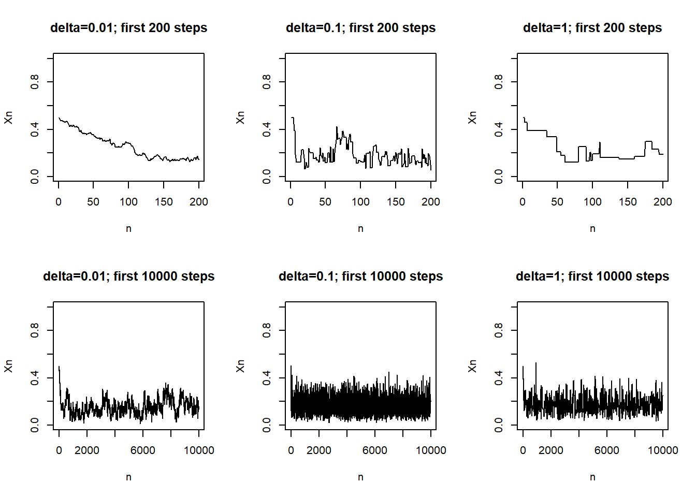
- The values of a Markov chain at different steps are dependent.
- If the degree of dependence is too high, the chain will tend to get “stuck”, requiring a large number of steps to fully explore the target distribution of interest.
Example 22.3 Continuing Example 22.2 with \(\delta = 0.1\), the following plots display the actual values of the chain (after warm up) and the values lagged by 1, 5, and 10 time steps. Are the values at different steps dependent? In what way are they not too dependent?
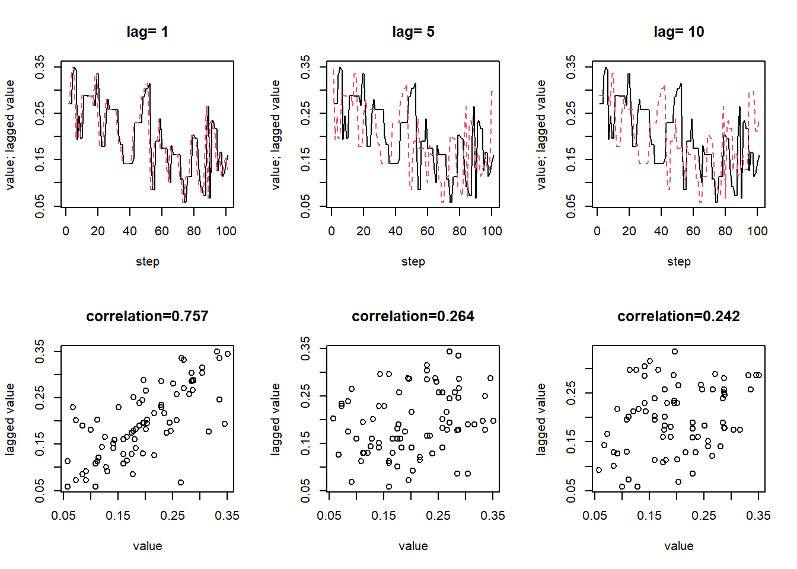
- An autocorrelation plot displays the autocorrelation within in a chain as a function of lag.
- If the ACF takes too long to decay to 0, the chain exhibits a high degree of dependence and will tend to get stuck in place.
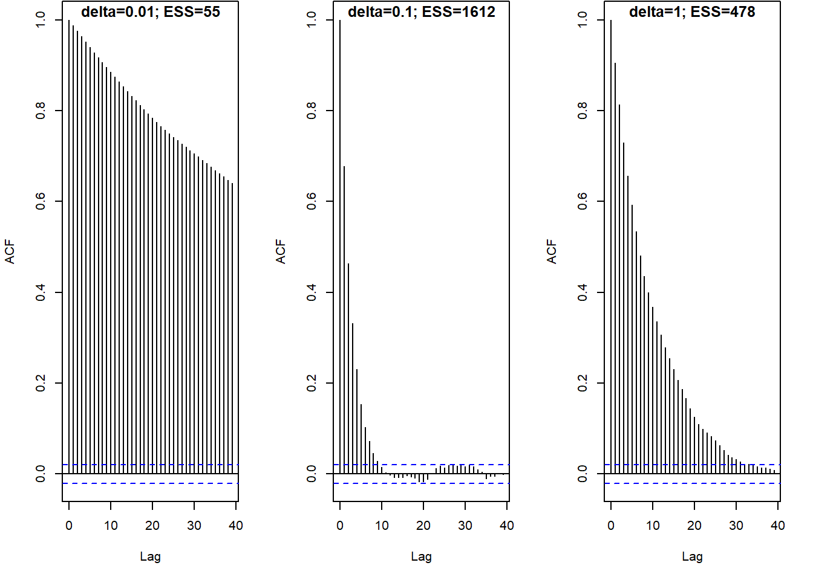
Example 22.4 Continuing Example 22.2 involving Metropolis sampling from a Beta(5, 24) posterior distribution. We know that the posterior mean is \(5/29=0.172\). But what if we want to approximate this via simulation?
Suppose you simulated 10000 independent values from a Beta(5, 24) distribution, e.g. using
rbeta. How would you use the simulated values to estimate the posterior mean?
What is the standard error of your estimate from the previous part? What does the standard error measure? How could you use simulation to approximate the standard error?
Now suppose you simulated 10000 from a Metropolis chain (after warm up). How would you use the simulated values to estimate the posterior mean? What does the standard error measure in this case? Could you use the formula from the previous part to compute the standard error? Why?
Consider the three chains in Example Example 22.2 corresponding to the three \(\delta\) values 0.01, 0.1, and 1. Which chain provides the most reliable estimate of the posterior mean? Which chain yields the smallest standard error of this estimate?
- The effective sample size (ESS) is a measure of how much independent information there is in an autocorrelated chain.
- The effective sample size of a chain with \(N\) steps (after warm up) is \[
\text{ESS} = \frac{N}{1+2\sum_{\ell=1}^\infty \text{ACF}(\ell)}
\] where the infinite sum is typically cut off at some upper lag (say \(\ell=20\)).
- For a completely independent chain, the autocorrelation would be 0 for all lags and the ESS would just be the number of steps \(N\).
- The more quickly the ACF decays to 0, the larger the ESS.
- The more slowly the ACF decays to 0, the smaller the ESS.
- The Monte Carlo standard error (MCSE) is the standard error of a statistic generated based on an MCMC algorithm.
- The MCSE of a statistic measures the run-to-run variability of values of the statistic over many runs of the chain of the same number of steps.
- For many statistics (means, proportions) the MCSE based on a chain with effective sample size ESS is on the order of \(\frac{1}{\sqrt{\text{ESS}}}\).
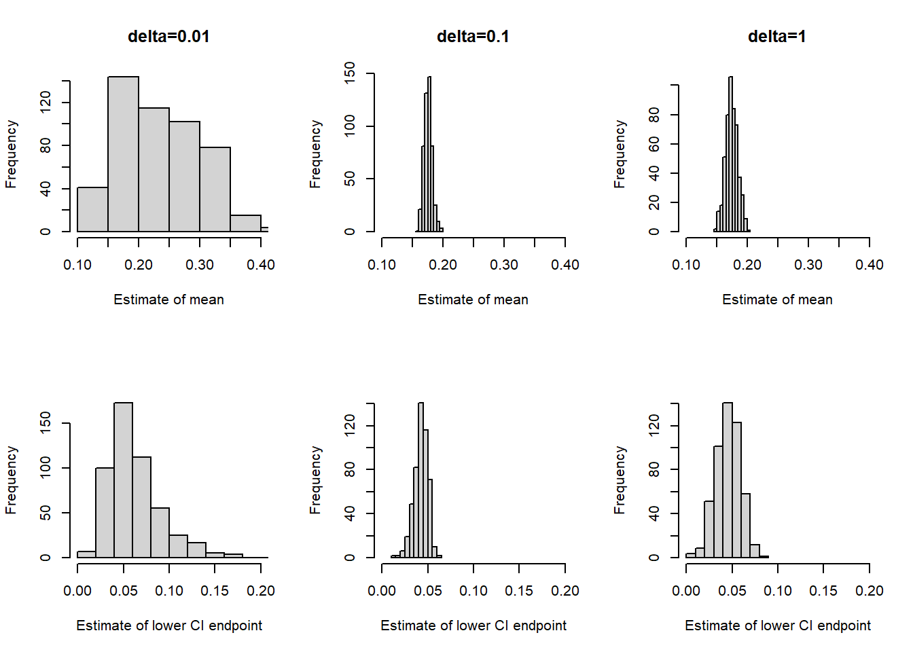
22.1 Notes
This is the brms code for the Beta-Binomial example in this section, including some of the diagnostic plots and statistics.
library(brms)Loading required package: RcppLoading 'brms' package (version 2.23.0). Useful instructions
can be found by typing help('brms'). A more detailed introduction
to the package is available through vignette('brms_overview').
Attaching package: 'brms'The following objects are masked from 'package:tidybayes':
dstudent_t, pstudent_t, qstudent_t, rstudent_tThe following object is masked from 'package:stats':
arlibrary(tidybayes)
library(bayesplot)This is bayesplot version 1.14.0- Online documentation and vignettes at mc-stan.org/bayesplot- bayesplot theme set to bayesplot::theme_default() * Does _not_ affect other ggplot2 plots * See ?bayesplot_theme_set for details on theme setting
Attaching package: 'bayesplot'The following object is masked from 'package:brms':
rhatdata = data.frame(y = c(rep(1, 4), rep(0, 25)))fit <-
brm(data = data,
family = bernoulli(link = identity),
formula = y ~ 1,
prior(beta(1, 3), class = Intercept, lb = 0, ub = 1),
iter = 3500,
warmup = 1000,
chains = 4,
refresh = 0)Compiling Stan program...Start samplingsummary(fit) Family: bernoulli
Links: mu = identity
Formula: y ~ 1
Data: data (Number of observations: 29)
Draws: 4 chains, each with iter = 3500; warmup = 1000; thin = 1;
total post-warmup draws = 10000
Regression Coefficients:
Estimate Est.Error l-95% CI u-95% CI Rhat Bulk_ESS Tail_ESS
Intercept 0.15 0.06 0.05 0.29 1.00 3760 4081
Draws were sampled using sampling(NUTS). For each parameter, Bulk_ESS
and Tail_ESS are effective sample size measures, and Rhat is the potential
scale reduction factor on split chains (at convergence, Rhat = 1).plot(fit)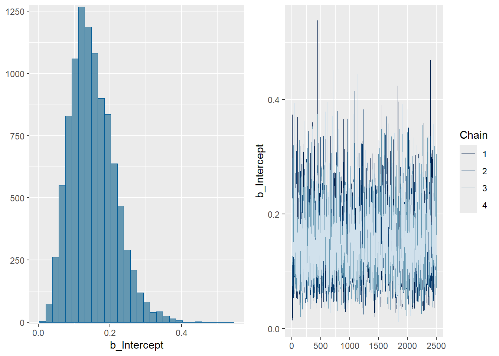
posterior = fit |>
spread_draws(b_Intercept) |>
rename(theta = b_Intercept)
posterior |> head(10) |> kbl() |> kable_styling()| .chain | .iteration | .draw | theta |
|---|---|---|---|
| 1 | 1 | 1 | 0.1910852 |
| 1 | 2 | 2 | 0.1087721 |
| 1 | 3 | 3 | 0.0771215 |
| 1 | 4 | 4 | 0.1465434 |
| 1 | 5 | 5 | 0.2236297 |
| 1 | 6 | 6 | 0.3048261 |
| 1 | 7 | 7 | 0.2690810 |
| 1 | 8 | 8 | 0.2469817 |
| 1 | 9 | 9 | 0.3737696 |
| 1 | 10 | 10 | 0.0145494 |
posterior |>
mutate(chain = .chain) |>
mcmc_dens_overlay(pars = vars(theta))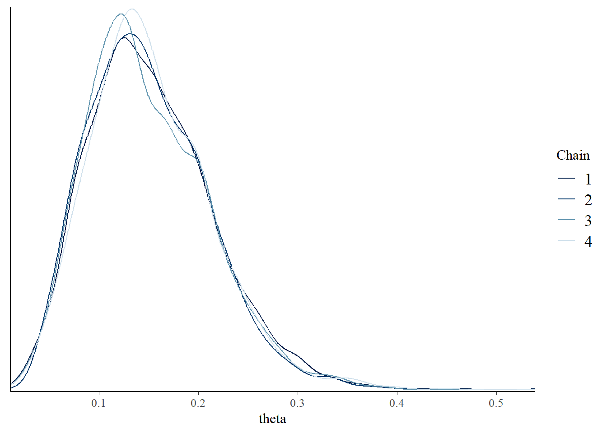
posterior |>
mutate(chain = .chain) |>
mcmc_acf(pars = vars(theta), lags = 20) 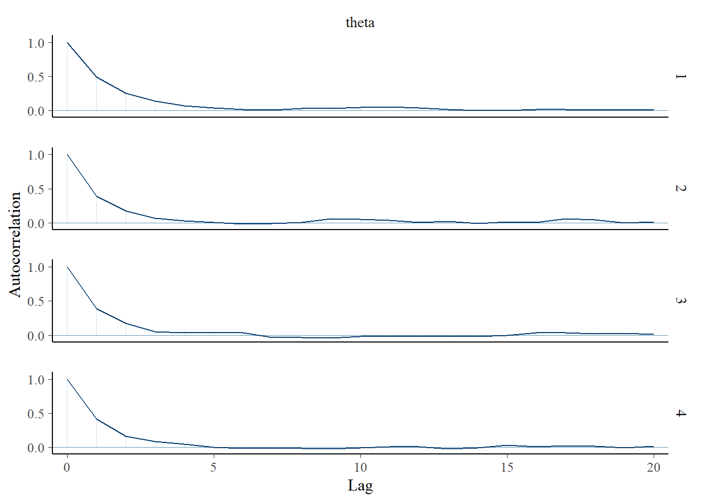
# rhat(fit)neff_ratio(fit)b_Intercept Intercept lprior lp__
0.3759820 0.3759820 0.3759820 0.4223372 neff_ratio(fit)["b_Intercept"] |>
mcmc_neff() +
yaxis_text(hjust = 0) 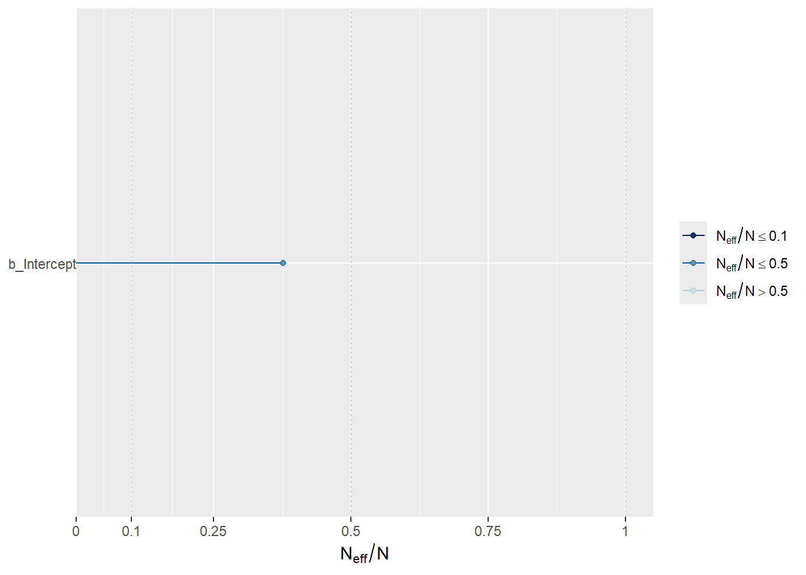